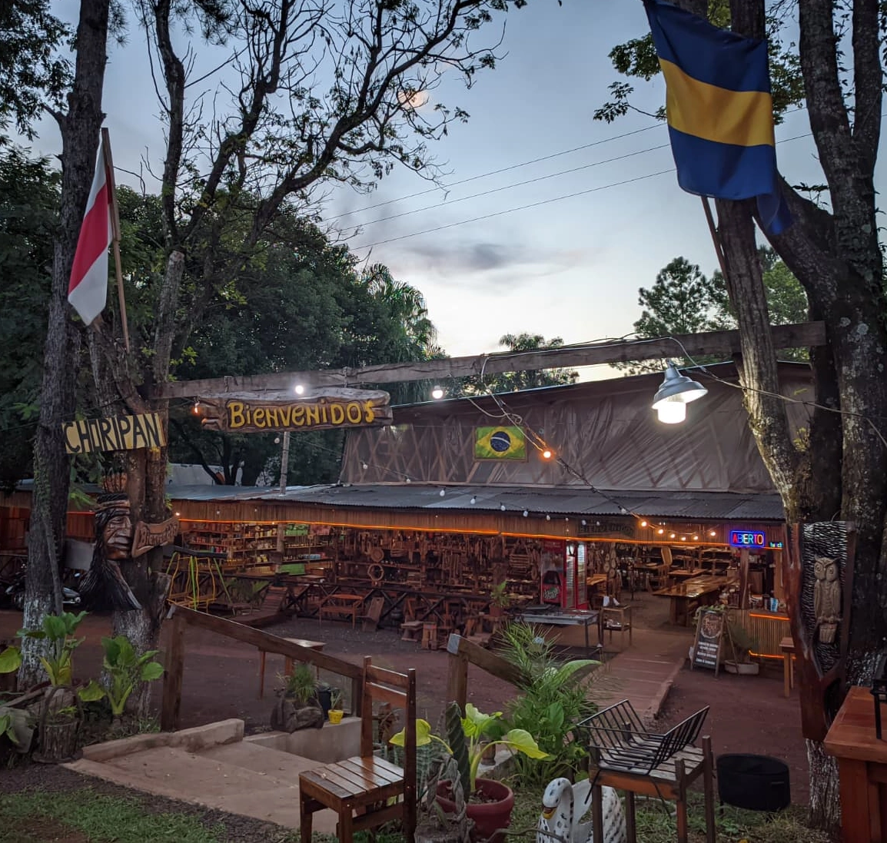
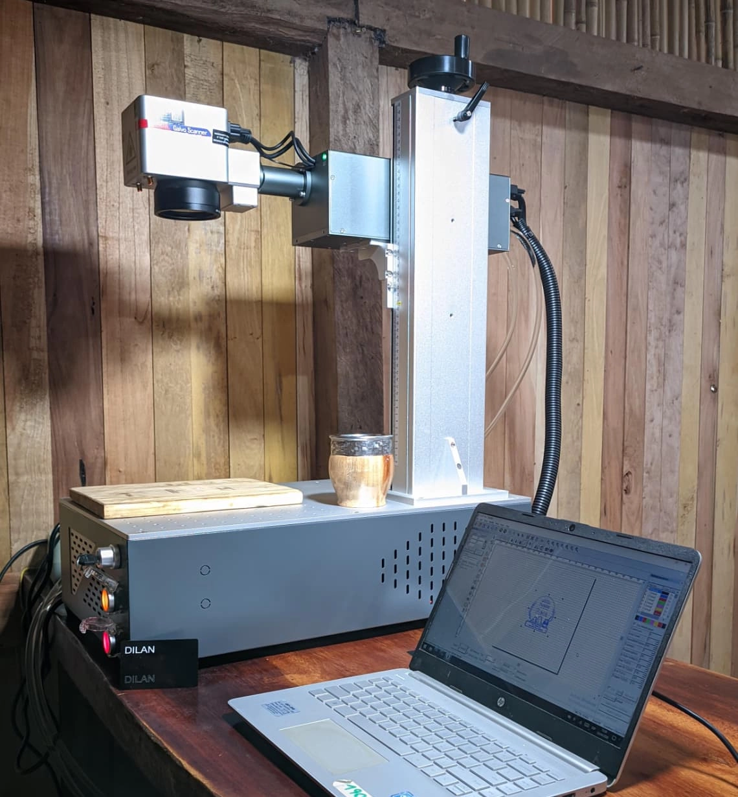
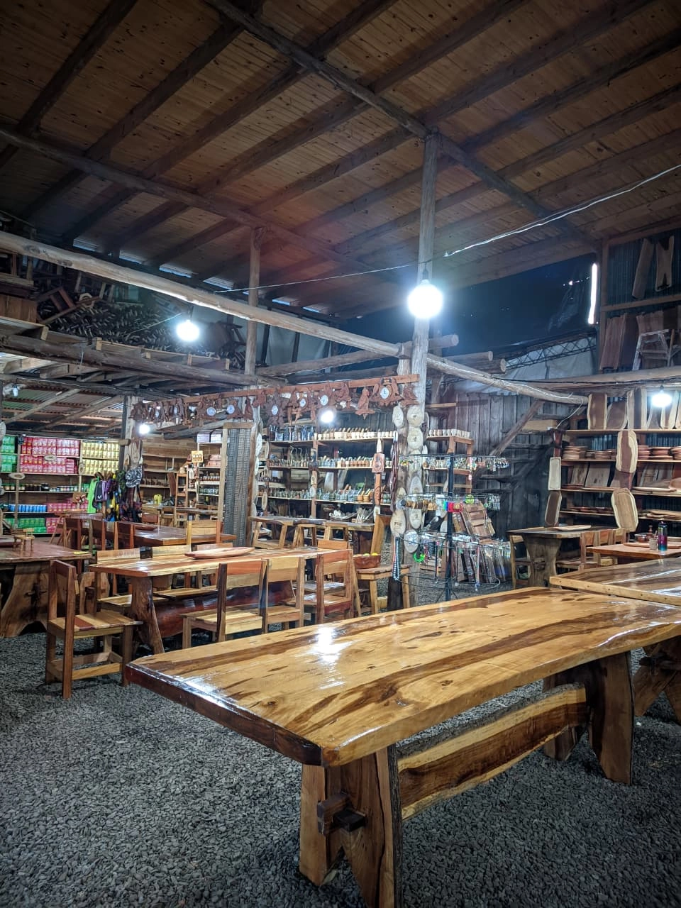
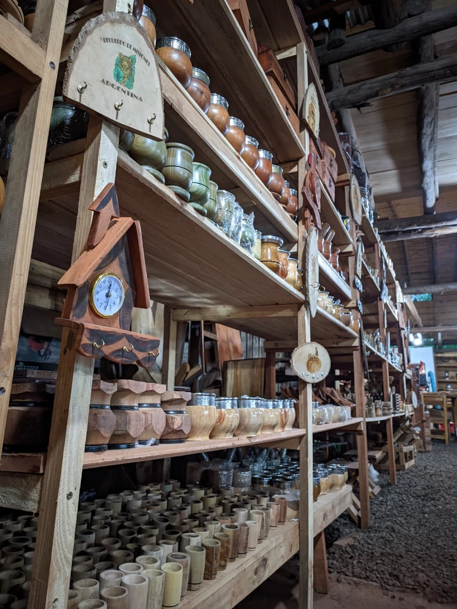
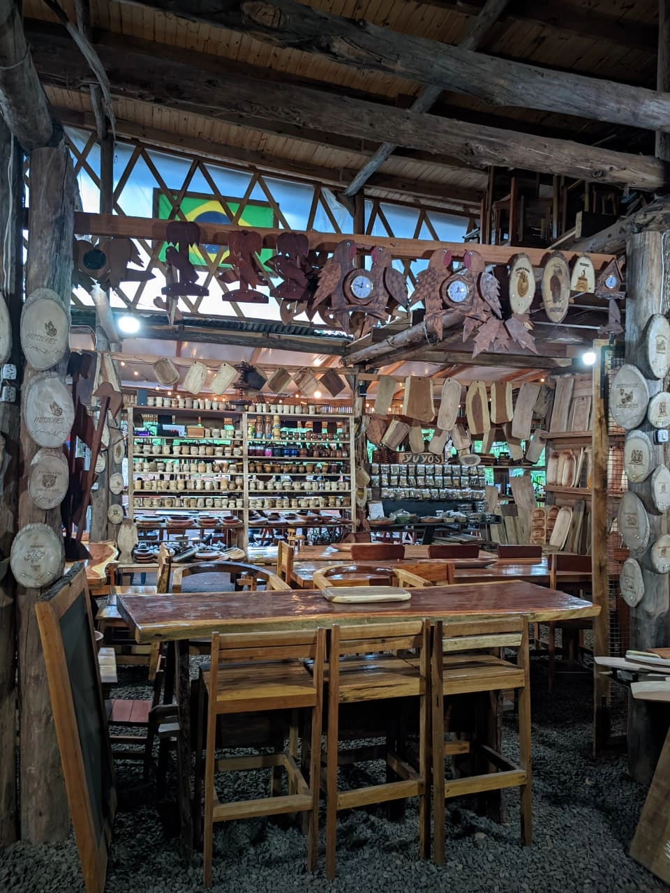

Gastronomía 24h
Comida casera recién hecha a toda hora. Platos calientes, sandwiches, bebidas y el mejor aroma a hogar.
Siempre abiertoComida, artesanía y experiencias en un solo lugar
Una parada con alma en el corazón de Misiones. Donde el reloj no importa y siempre hay alguien para recibirte.
Parador Roca nace en la ruta, como nacen los buenos encuentros: sin aviso y con el corazón abierto. Somos una parada obligada para quienes buscan comida casera a toda hora, productos hechos a mano y esa calidez que solo un lugar con alma puede ofrecer.
Acá no hay apuro. Hay madera, fuego, mate y gente que pone el corazón en cada detalle. Nuestro parador está pensado para que te sientas como en casa — sin importar la hora que marque el reloj.

Cada servicio está pensado para que vivas una experiencia única en la ruta argentina.
Comida casera recién hecha a toda hora. Platos calientes, sandwiches, bebidas y el mejor aroma a hogar.
Siempre abiertoMates tallados, tablas de madera, cuchillos artesanales. Productos únicos hechos a mano con dedicación.
Hecho a manoGrabado láser de alta precisión sobre mates, madera, acrílico y más. Regalos únicos en minutos.
ExclusivoNo todos los paradores tienen esta tecnología. Contamos con una máquina de grabado láser UV de alta precisión para crear productos personalizados únicos en minutos.
¿Buscás un regalo especial? ¿Un mate con un nombre? Acá lo hacemos realidad. Rápido, preciso y con terminación profesional.
📦 Envíos a todo el país — Recibí tu producto donde estés
💬 Consultar personalización
Un vistazo a nuestros productos, nuestro espacio y la atmósfera que nos hace únicos.



Estamos en la ruta, listos para recibirte en cualquier momento del día.
Abierto las 24 horas, los 7 días de la semana, los 365 días del año.
No importa la hora. Siempre hay algo rico, alguien despierto y un lugar para vos.
Pedí comida, consultá por productos personalizados o contanos qué necesitás.
Respondemos rápido por WhatsApp.